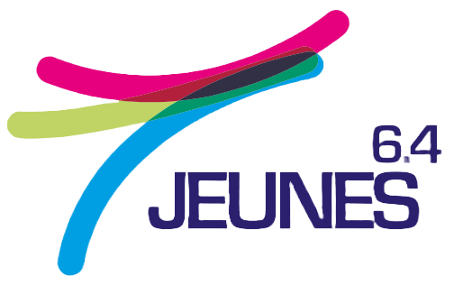

Pour faire de l'engagement
une valeur !

...l'expression d'un potentiel,
la promesse d'une richesse !
JEUNES 6.4 est un dispositif de valorisation de l’engagement des jeunes en Pyrénées-
Atlantiques soutenu par l’Etat, le Conseil général, le conseil régional, les CAF Béarn-Soule et
Pays Basque, la MSA, l’université de Pau et des pays de l’Adour, la CPAM.